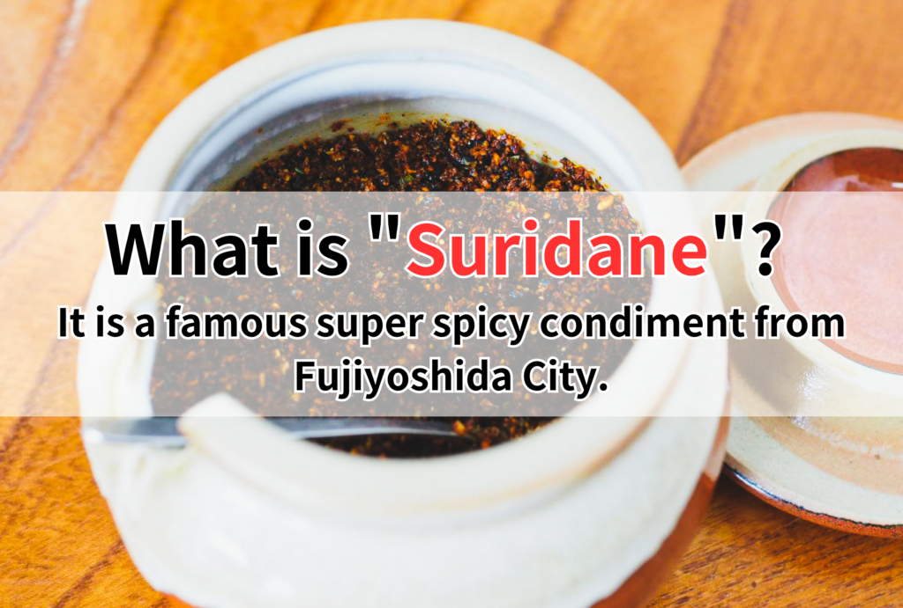
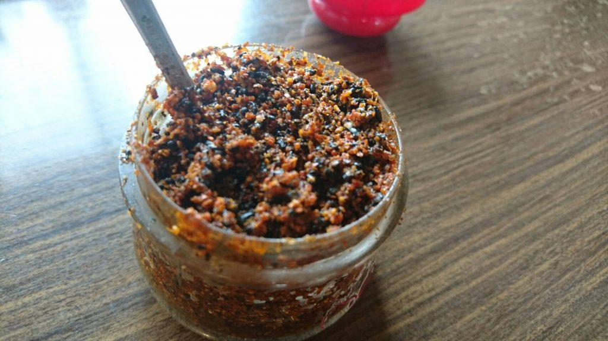
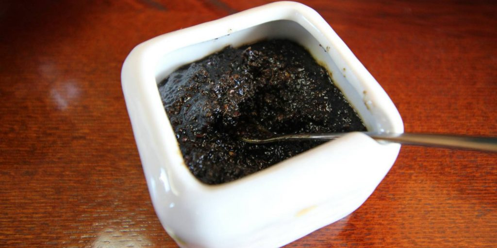
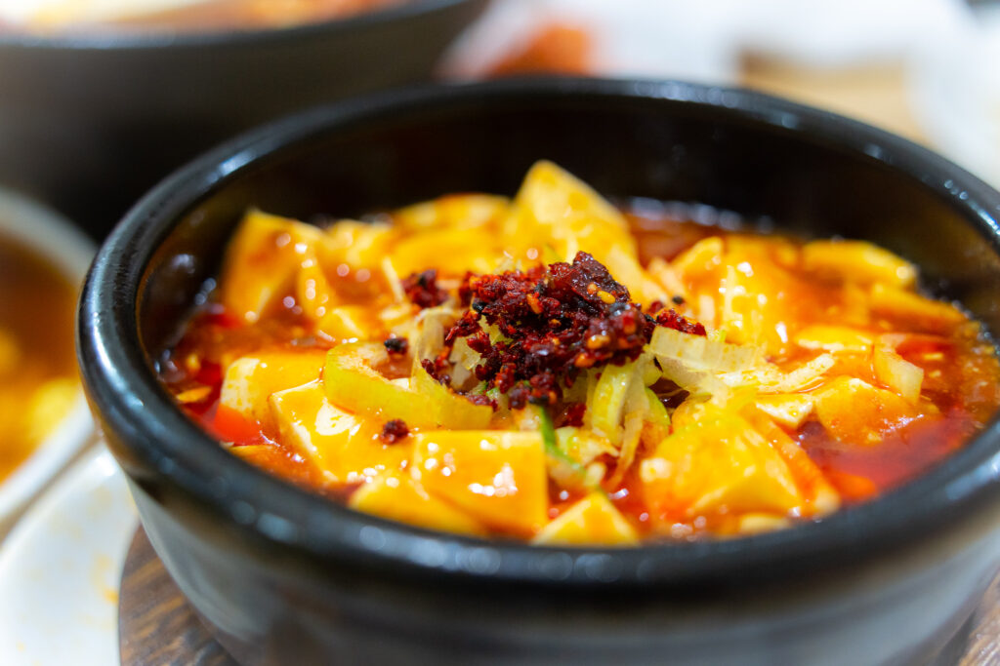
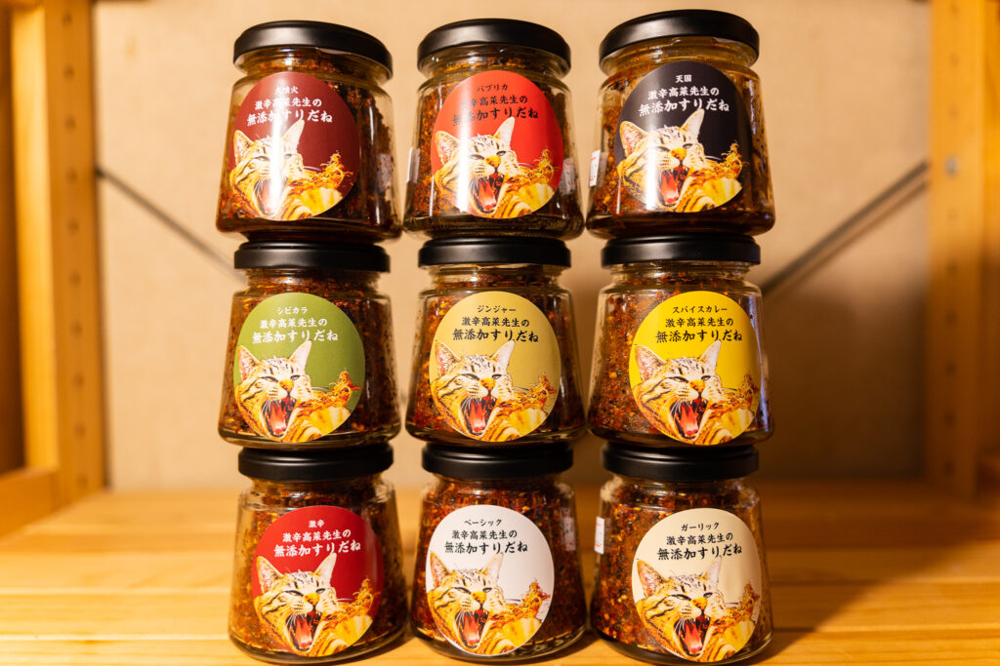
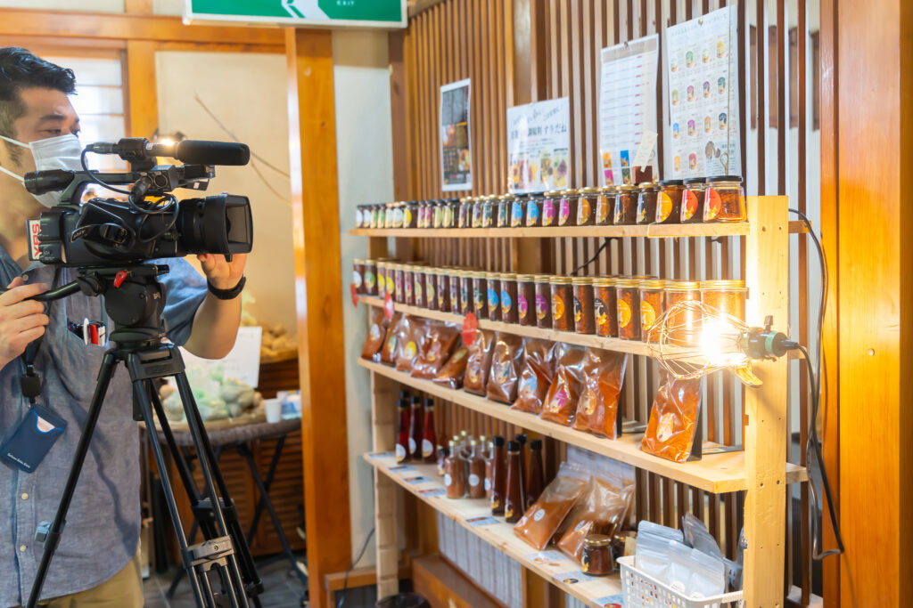
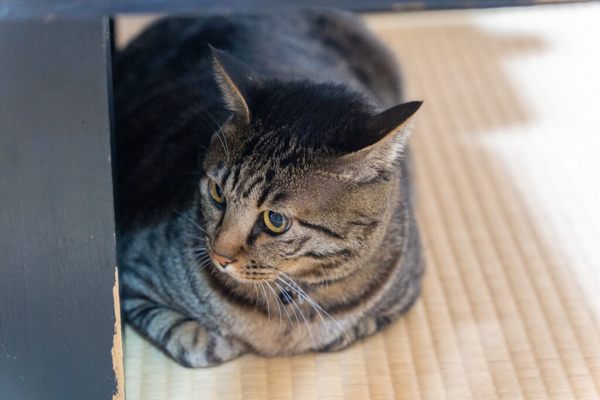

“Suridane” is a condiment made by frying red chili peppers with sesame seeds and sansho (Japanese pepper) in oil. It is always found in udon and houtou restaurants in Fujiyoshida and Kawaguchiko, and most customers diligently sprinkle suridane on their udon. While typically one would think of adding “ichimi” or “shichimi” (Japanese chili pepper blends) to udon for spiciness, in the case of Yoshida’s udon in Kawaguchiko, “suridane” is used instead of “ichimi” or “shichimi.” Suridane is also known as “karame” or “karai no” (spicy), and it is placed on the counter or table along with tenkasu (tempura crumbs) and soy sauce. Although commonly available suridane tends to have a moist texture, the way it is made varies among different shops, with some frying it in oil and others adding soy sauce, sugar, or bonito flakes to create their unique flavors. It not only provides spiciness but also enhances the umami flavor, making it a versatile condiment that pairs well with various dishes and expands the range of culinary possibilities when kept in the refrigerator. It has a shelf life of one year from the manufacturing date, allowing for long-term storage and efficient utilization without wastage.
Feature 1 of Suridane: Appearance.

Suridane has different appearances depending on the shop or household.
When we think of Suridane, we imagine a “red and spicy appearance,” but there are also brown and black Suridane variations.
One of the characteristics of Suridane is the visual enjoyment it provides.
Feature 2 of Suridane: texture.


If the appearance varies, the texture of the suridane also differs depending on the restaurant.
There are suridane with a crunchy sprinkle-like texture, as well as suridane that have a gooey, liquid-like consistency. Since many suridane recipes include sesame oil, the most common texture is moist and smooth.
Feature 3 of Suridane: All-purpose seasoning.

Since Suridane is often introduced in conjunction with Yoshida Udon, you might strongly associate it with “seasoning for udon.” However, it is also perfect for dishes other than udon. It complements rice bowls, ramen, yakisoba, tamagokake gohan (rice with raw egg), yakiniku, and other dishes favored by those who enjoy spicy flavors. Suridane has truly established itself as an all-purpose spicy seasoning.
About Our Popular Souvenir Item “Suridane”

Our Suridane is made by carefully blending only selected natural ingredients, without using any chemical seasonings or additives.
For those who love extreme spiciness, we also offer a Suridane that combines the discovered super spicy chili pepper, ensuring an intense level of heat.
We also have a chili pepper-free Suridane mixed with vegetable powder, perfect for those who are not fond of spicy flavors. This option is popular among children as well.


Our original “Suridane” is blended with bonito broth, providing not only spiciness but also a rich umami flavor. This makes it suitable for various dishes. In addition to udon and ramen, you can enjoy it with pickles, rice topped with raw egg, stir-fries, and simmered dishes. Feel free to use it as a topping for any dish according to your preference.